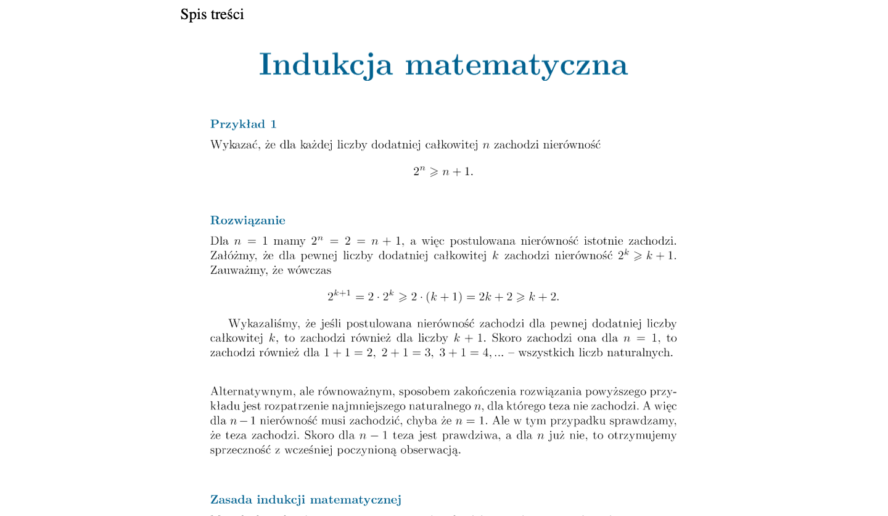
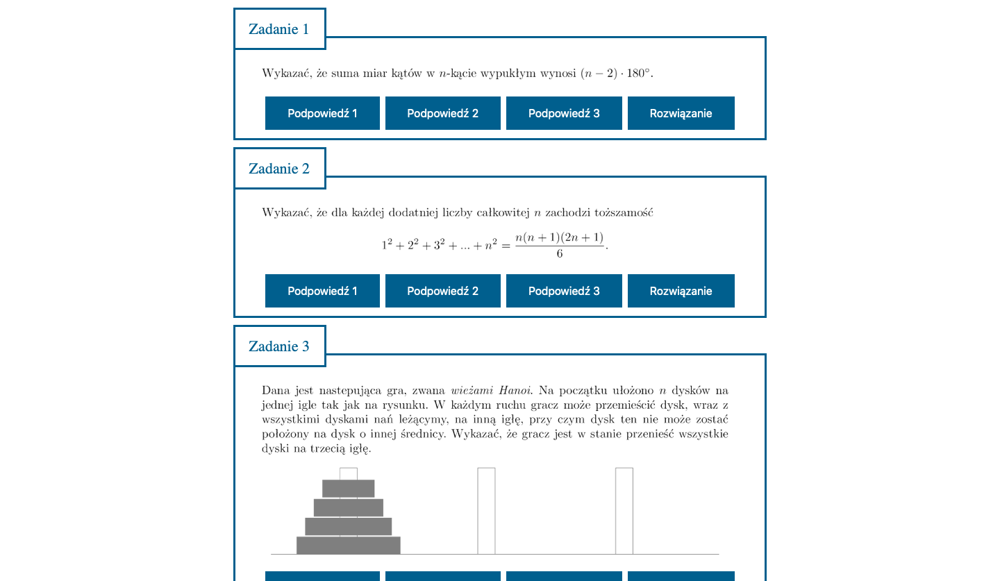
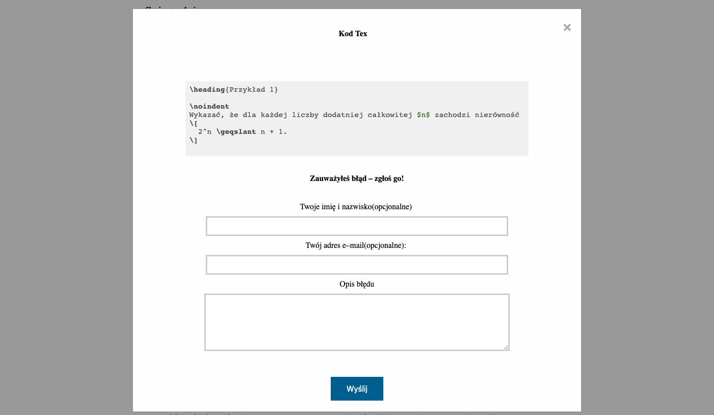

Wstęp do matematyki olimpijskiej - zadania niegeometryczne
E-book z otwartym kodem źródłowym w LaTeXu
,,Wstęp do matematyki olimpijskiej'' to książka przeznaczona poziomem dla ludzi, którzy mają pewne doświadczenie w matematyce olimpijskiej na poziomie Olimpiady Matematycznej Juniorów i chcą walczyć o sukces na ,,dużej'' olimpiadzie. Teoria i zadania są z przedziału [prostsze zadania z OMJ, łatwiejsze zadania z finału OM].

Do każdego zadania dołączone są do 3 podpowiedzi i rozwiązanie. Każda kolejna podpowiedź zbliża do rozwiązania zadania i po przeczytaniu wszystkich czytelniczka/czytelnik w dużej części zadań poradzi sobie sam. Wersja online ułatwia zaglądanie na podpowiedzi, tak, aby nie zobaczyć wskazówek do innych zadań 🙂

Opracowanie jest dostępne w 2 formatach: PDF dostępnym do pobrania oraz w wersji online. Wersja online wyposażona jest w łatwy system uzyskiwania kodów LaTeX i zgłaszania błędów znalezionych w książce. Wystarczy dwukrotnie kliknąć na tekst, aby wyświetlić okno dialogowe.

Źródła większości z zadań oraz pomysłów na rozwiązania są dostępne na końcu pliku PDF.